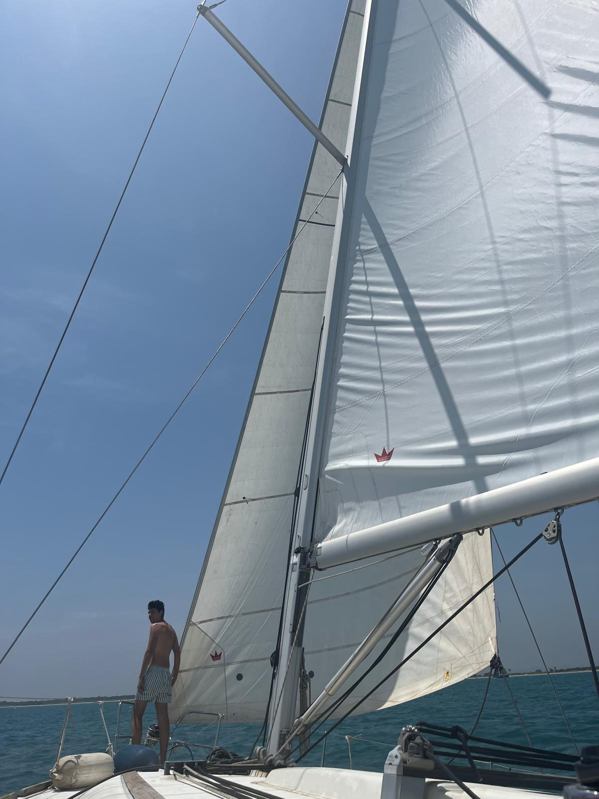

Imágenes

Quién soy
Soy estudiante del Grado en Ingeniería Informática, con interés en comprender y aplicar los fundamentos de la informática y su impacto en la sociedad actual. Mi formación se centra en el estudio del hardware y el software, el desarrollo de soluciones tecnológicas y el análisis de la información como motor del progreso.
A lo largo de mis estudios he comenzado a adquirir conocimientos en programación, diseño de sistemas informáticos y uso de tecnologías digitales, entendiendo la informática no solo como una disciplina técnica, sino también como una herramienta para resolver problemas reales de personas y organizaciones.
Quién quiero ser
Me interesa el desarrollo profesional como ingeniero informático con una formación integral, combinando habilidades técnicas, capacidad de resolución de problemas, trabajo en equipo y una visión ética y social del uso de la tecnología.